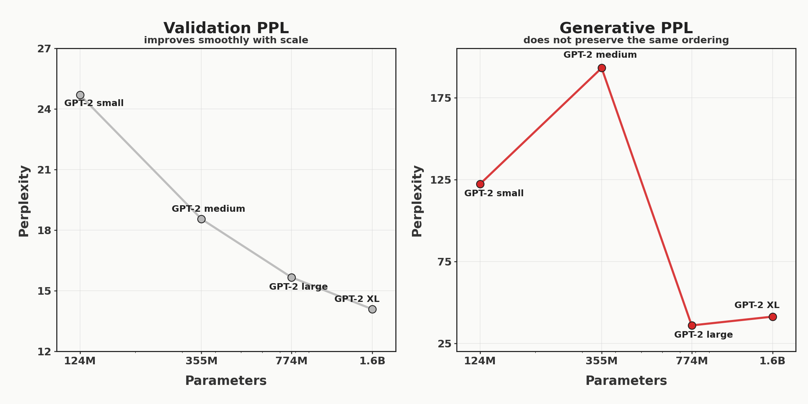
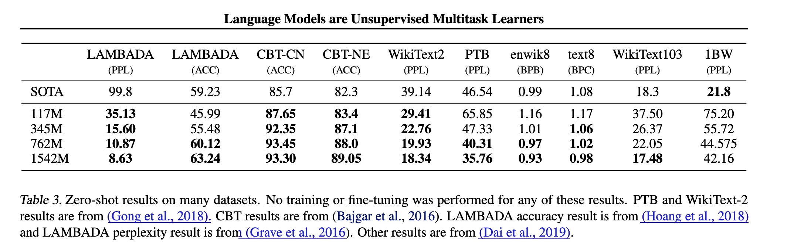
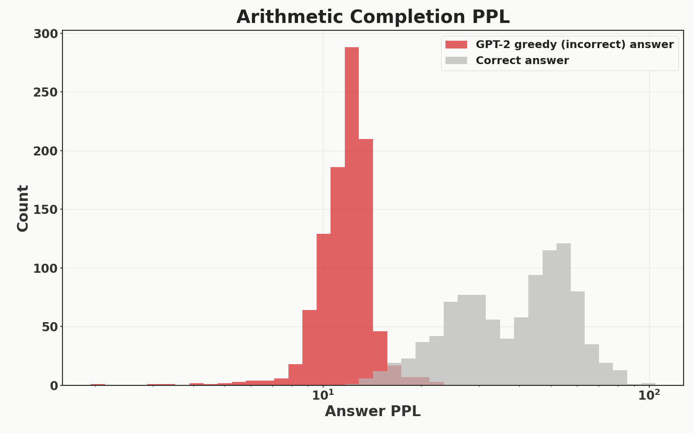
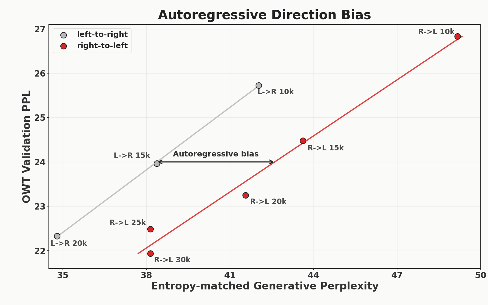
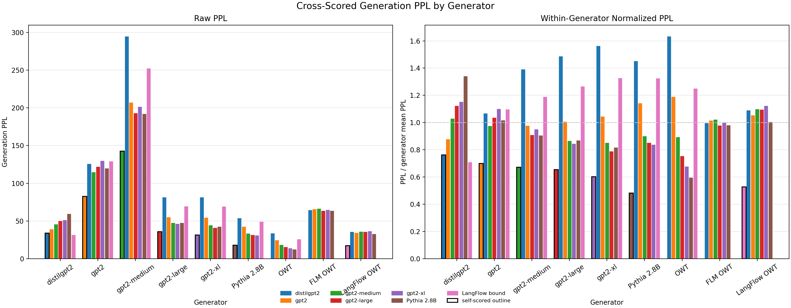

Fixing flow model evals
Flow models are a very promising alternative to autoregression in language modeling, especially in the few-step regime. Yet, the current standard for evaluating these models is ripe for misinterpretation and needs rethinking.
What is the standard for evaluating these models?
Unlike autoregressive models, flow models cannot tractably calculate the likelihood of a given string of text. So the standard evaluation is to first sample text from your trained flow model, then score these generated samples using two metrics:
- Generative perplexity (gen. ppl): Calculate the perplexity of samples under a pretrained model (almost always
gpt2-large). This is analogous to, but distinct from, the standard validation perplexity where you calculate the perplexity of some ground-truth data using your model itself. - Entropy: Compute the empirical token entropy (\(-\sum_i p_i \log p_i\)) of each generated sample, then average across samples. This is to ensure that the generated samples are not degenerate (e.g. "aaaaa..." has low gen. perplexity but also an entropy of 0).
Look at the plot below, showing the progression of papers reporting results on OpenWebText (OWT) with 1024 model evaluations (NFEs). With each new release, both generative perplexity and entropy decrease. I will argue that the gains in generative perplexity are almost entirely explained by decreasing entropy: not by improved model quality.
Understanding generative perplexity using GPT-2
In order to understand this tradeoff between entropy and generative perplexity, we need to step away from flow models and diffusion for a moment. We will measure both for a family of models for which we have a clear understanding of model quality: the GPT-2 class of models. As we scale from gpt2-small (117M) to gpt2-medium (342M) to gpt2-large (762M) to gpt2-xl (1.5B), the validation perplexity and accuracy smoothly improve on all measured domains. However, when you sample from these models, gpt2-small has a lower generative perplexity than gpt2-medium, and gpt2-large has a lower generative perplexity than gpt2-xl. The entropies between all conditions vary by less than 0.4 nats.
| model | OWT val. ppl | gen. ppl | entropy (data=5.44) |
|---|---|---|---|
| gpt2-small (124M) | 24.7004 | 122.3149 | 5.8842 |
| gpt2-medium (355M) | 18.5578 | 193.0853 | 6.0724 |
| gpt2-large (774M) | 15.6704 | 35.9183 | 5.7023 |
| gpt2-xl (1.6B) | 14.0935 | 41.2730 | 5.7145 |
Gold, silver, and copper mark the best, second-best, and third-best generative perplexity scores. Note the disagreement between the OWT validation perplexity and the generative perplexity.

GPT-2 validation perplexity improves with scale, but generative perplexity under gpt2-large does not preserve the same ordering.
This should raise a red flag: the standard evaluation for flow models does not track the scaling of GPT-2 models. I'll present three issues which explain what went wrong, and I'll propose solutions (which the field is already converging towards) at the end. The issues:
- It is trivial to generate "SOTA" results by trading off a little entropy for a lot of PPL
- The best-scoring model is not the best language model, but the most
gpt2-large-like - Entropy only measures intra-sample diversity: inter-sample diversity is an after thought
Importantly, flow map language models are unambiguously better at small NFEs. Here, I focus on the larger NFE=1024 to point out the issues with the evaluation framework, not with any specific paper. Additionally, the first point -- that entropy must be reported because it can affect result ordering -- was first pointed out in CANDI.
The issues
1. It is trivial to generate "SOTA" results by trading off a little entropy for a lot of PPL
There is a fundamental tradeoff between generative perplexity and entropy. Generative perplexity is measuring how predictable the sequence is (under some scoring model) and entropy is measuring how unpredictable the sequence is (based on unigram counts). So, it would be unsurprising if a knob which decreases entropy also decreases generative perplexity.
In this section, we will first show that in autoregressive models, not accounting for small entropy differences can lead to incorrect conclusion, e.g. gpt2-small is a better language model than gpt2-xl despite being over 10x smaller. We will also show that reporting generative perplexity at a matched entropy fixes this issue and explains the difference in GPT-2 scaling from the introduction. We will then show that all of the model quality improvements in the last 3 years (at NFE=1024) are fully attributable to this tradeoff between generative perplexity and entropy -- not better models of language.
Entropy differences explain deviations from GPT-2 scaling trends
As mentioned in the introduction, sampling from all GPT-2 models with t=1 and scoring under gpt2-large leads to a surprising finding: gpt2-small does better than gpt2-medium, and gpt2-large does better than gpt2-xl. However, as shown below, there is a clear relation between the entropy of the generations and their generative perplexity.
Sampling from GPT-2 models at the same temperature can reverse the expected scaling trend under generative perplexity.
| model | OWT val. ppl | gen. ppl | entropy (data=5.44) |
|---|---|---|---|
| gpt2-small (124M) | 24.7004 | 122.3149 | 5.8842 |
| gpt2-medium (355M) | 18.5578 | 193.0853 | 6.0724 |
| gpt2-large (774M) | 15.6704 | 35.9183 | 5.7023 |
| gpt2-xl (1.6B) | 14.0935 | 41.2730 | 5.7145 |
Gold, silver, and copper mark the best, second-best, and third-best generative perplexity scores. Note the disagreement between the OWT validation perplexity and the generative perplexity.
Let's see if these entropy differences can explain why gpt2-medium at t=0 has a worse generative perplexity than gpt2-small. We can treat the sampling temperature as an "entropy knob": lower temperature generations create low entropy/low gen. ppl samples, and higher temperature generations create high entropy/high gen. ppl samples. Below, we sweep sampling from gpt2-small and gpt2-medium with t=0 to t=1 and plot the gen. ppl vs. entropy for each temperature.
gpt2-small and gpt2-medium at various sampling temperatures. Each point is a generation at a specific sampling temperature. When entropy-matched, we recover that gpt2-medium > gpt2-small, when temperature-matched, one would conclude that gpt2-small > gpt2-medium.
So the generative perplexity is incredibly sensitive to entropy. If we match the sampling parameters (temperature), gpt2-small has a better gen. ppl (this is bad). If we match the entropy, gpt2-medium has a better gen. ppl (this is good). In the introduction, we were temperature matching: explaining why we measured `gpt2-small` as being the better model.
To further drive home that this unaccounted-for entropy difference is a problem, I'll show that even 0.23 nats is enough to make gpt2-xl have a worse gen. ppl than gpt2-small does at the entropy of the data.
Below, we show that sampling from gpt2-xl at t=0.99 produces samples with higher generative perplexity than gpt2-small at t=0.91, with only a difference of 0.23 nats in their respective entropies.
gpt2-xl look worse than gpt2-small under generative perplexity.This variation is well within the variation of results reported in recent papers: 4.95-5.12 (DFM), 5.33-5.71 (LMFM), and 5.25-5.62 (LangFlow).
Entropy differences explain high-NFE gains from recent works
Let's compile three recent flow model papers and their diffusion baselines with reported NFE=1024 on OWT. The right plots the same data, but places points chronologically.
Recent high-NFE (NFE=1024) flow and diffusion results improve in generative perplexity while moving toward lower-entropy samples.
| model | gen. ppl | entropy |
|---|---|---|
| SEDD-absorbing | 105.03 | 5.62 |
| MDLM | 104.85 | 5.63 |
| SEDD-uniform | 99.90 | 5.56 |
| Duo | 77.69 | 5.55 |
| FMLM | 62.23 | 5.33 |
| DFM | 47.07 | 5.12 |
| LangFlow | 36.53 | 5.25 |
Reported OWT results at NFE=1024 show lower generative perplexity paired with lower entropy across later methods.
As you can see, both generative perplexity and entropy are decreasing over time with each new paper release. Every result since Duo reports a lower gen. ppl and entropy than the results it compares against. This makes it hard to compare these methods because there is an inherent tradeoff to gen. ppl and entropy, and as showed earlier, tiny differences in entropy can lead to large differences in generative perplexity.
Just like in autoregressive models, we can sample from Duo with a temperature. If we, just as with the GPT-2 models, plot generative perplexity vs. entropy as we change the sampling temperature, we can show that since Duo, all gains in generative perplexity can be attributed to just reducing the entropy.
Proposal to fix the entropy problem
Fixing this is straightforward: sweep PPL and entropy as we have done here and as is suggested by CANDI. Include the entire curve in the results. If you are reporting a scalar gen. ppl quantity, report interpolated gen. PPL at the entropy of the data (5.463 for OWT). This completely eliminates any variance attributable to difference in entropy.
2. The best-scoring model is not the best language model, but the most gpt2-large-like
Now, if you paid close attention to the previous section, you may have noticed that gpt2-large is still slightly better than gpt2-xl even when entropy matched. Why is this? It is because -- even when fixing the entropy problem -- the model with the best generative perplexity is not the one that models the data the best, but the one that matches the scorer the best (in this blog, and in the field generally, gpt2-large). For models that are poor models of the data, this doesn't matter much as gpt2-large might as well be an oracle. But as the models improve, this will become more and more important.
gpt2-large is an imperfect model of language. Even just comparing to gpt2-xl, it has lower accuracy and higher PPL on every measured benchmark:

However, as shown earlier, gpt2-large gives a better gen. ppl to its own samples than to gpt2-xl samples. In fact, gpt2-large assigns a higher probability to its own entropy-matched samples than to actual samples of the data. This is unsurprising: by definition, the highest probability (lowest gen. PPL) strings are those greedily (t=0) generated by the scoring model.
Generative perplexity can punish correctness

gpt2-large to correct multiplication answers versus its own greedy, incorrect completions across 1000 problems.You can dream up many clear examples to show that the current evaluation is penalizing "correct" behavior. Here is one clear example: gpt2-large assigns much higher probability to incorrect completions to arithmetic problems than correct completions. Across 1000 5-digit multiplication problems, I queried gpt2-large to measure the generative perplexity of two completions: it's own greedy (t=0) completion and the correct completion. It is shown 50 in-context examples. The histogram of the generative perplexities across the 1000 randomly-sampled problems are shown above. gpt2-large assigns an aggregate PPL of 37.9 to the correct answer, and an aggregate PPL of 11.70 to it's own greedy completion which is correct 0% of the time. This means that a model which can do perfect arithmetic would have a much worse generative PPL than a model which matches the incorrect answers of gpt2-large.
Generative perplexity is biased towards autoregressive models
Further, since you would expect models with the same architecture/training to have more correlated errors than models with different architectures/training, this means that geneartive perplexity is architecturally biased towards left-to-right autoregressive transformers.
To show this, I trained two 179M parameter autoregressive transformers on OpenWebText: one in the standard left-to-right fashion, and one training from right-to-left. For each checkpoint, we run two evals:
- Validation perplexity on held-out OpenWebText data (standard autoregressive validation)
- Generative perplexity under `gpt2-large` at the entropy of the data. To do this, we sweep sampling temperatures like in earlier sections to control for entropy (256 sequences for each temperature).
A priori, you would expect learning right-to-left to be a bit harder (TODO: cite papers), so validation perplexity should be higher for a given training step. If we treat validation perplexity as our gold standard, then any difference in the ratio between validation perplexity and generative perplexity reveals an unwanted generative perplexity bias.

Note two things in the above figure. First, we do find that at any given step count (10k, 15k, 20k), the left-to-right model has a higher validation perplexity on held-out data, as expected. Second, and more importantly, for any given OWT validation perplexity, the generative perplexity is > 3 nats higher, revealing a bias for left-to-right autoregressive models.
Proposal to fix the gpt2-large bias
Fixing this is not straightforward: it is inherent to the idea of using another model as the ground truth. But, if we are going to treat a language model as the ground truth language distribution, we might as well use the better one: gpt2-xl.
3. Entropy only measures intra-sample diversity: inter-sample diversity is an after thought
In some recent flow model papers, entropy is referred to as a "diversity" measure. However, this entropy is computed within each generated sequence and then averaged across generated sequences:
\[ \frac{1}{M}\sum_{m=1}^{M} \left( -\sum_{v \in V} \hat p_m(v)\log \hat p_m(v) \right) \]
where \(\hat p_m(v)\) is the empirical frequency of token \(v\) in generated sample \(m\). This means that if a model generated the same exact sequence every sample, and that sequence has low generative perplexity and high entropy, then it would seem like an incredibly strong model under these two metrics.
To give an example, if the model recited the following sequence from OWT every single sample, it's PPL would be 4.283 with an entropy of 5.42 -- less than half of the PPL of gpt2-xl at the same entropy:
Rice, 42, was the highest-ranking officer of the six police officers charged in Gray's arrest and death. Prosecutors had alleged that Rice and others caused Gray's death by failing to secure him in a seat belt in the back of the van, where Gray suffered severe spinal cord injuries last year.\n\nRice was suspended without pay from May 1, 2015, when he was charged by the state's attorney's office, until July 18 of this year, when Circuit Judge Barry Williams found Rice not guilty of all charges.\n\n\"Being suspended without pay for over a year has been financially devastating to Lt. Rice and his family,\" said Michael Belsky, Rice's attorney.\n\nWilliams said prosecutors failed to meet their burden of proving the charges against Rice beyond a reasonable doubt, instead asking the court to rely on \"presumptions or assumptions\" \u2014 something it cannot do. He said the court \"cannot be swayed by sympathy, prejudice or public opinion.\"\n\nCAPTION Baltimore State's Attorney Marilyn Mosby talks about why her team decided to drop the charges against the officers in the Freddie Gray case. (Kevin Richardson/Baltimore Sun video) Baltimore State's Attorney Marilyn Mosby talks about why her team decided to drop the charges against the officers in the Freddie Gray case. (Kevin Richardson/Baltimore Sun video) CAPTION \"I think most of the blame falls to the prosecutor who failed to prosecute the case and brought cases that she didn't have the evidence for,\" Gov. Larry Hogan said. (Erin Cox/Baltimore Sun video) \"I think most of the blame falls to the prosecutor who failed to prosecute the case and brought cases that she didn't have the evidence for,\" Gov. Larry Hogan said. (Erin Cox/Baltimore Sun video)\n\nMayor Stephanie Rawlings-Blake has said Rice now faces an administrative review.\n\nGray, 25, died April 19, 2015, one week after his arrest. His death sparked weeks of protests and activism against police brutality, and two nights of looting and rioting.\n\nLast month, the spending panel authorized $87,705 in back pay for Officer Caesar Goodson Jr., the driver of the van in which Gray sustained his injuries. He, too, was cleared of all charges at trial. Williams also acquitted Officer Edward Nero, and prosecutors dropped all charges against the other three police officers.\n\nLbroadwater@baltsun.com\n\nTwitter.com/lukebroadwater<|endoftext|>MIAMI, August 9 \u2013 The Miami HEAT announced their 2016-17 preseason schedule today, which is highlighted by the team\u2019s three home games at AmericanAirlines Arena. The HEAT will open the preseason on the road on Tuesday, October 4, when they take on the Washington Wizards at 7PM. They will make their first appearance in Miami a week later, when they host the Brooklyn Nets at 7:30PM on Tuesday, October 11. They will also face off with the Orlando Magic in Miami on October 18 at 7:30PM, and conclude the home preseason schedule vs. the Philadelphia 76ers on October 21 at 7:30PM.\n\nTickets for the three home games at AmericanAirlines Arena are on sale now and can be purchased by logging on to HEAT.com, Ticketmaster.com, by visiting any Ticketmaster outlet, or by calling 1-800-4NBA-TIX. Tickets can also be purchased at the AmericanAirlines Arena Ticket Office Monday through Friday from 10AM to 5PM. Ticket prices start at $10 plus applicable fees.\n\nIn addition to the three home games at AmericanAirlines Arena, the HEAT will host two neutral site games vs. the Minnesota Timberwolves. Miami returns to the Sprint Center in Kansas City, MO, for the sixth time on October 8. Tickets to that game are available by visiting SprintCenter.com, Price Chopper Box Office at Sprint Center or by calling (888) 929-7849. The HEAT will also return to the KFC Yum! Center in Louisville, KY, for the third straight season, on October 15. Tickets are available at the KFC Yum! Center Box Office, all Ticketmaster outlets, Ticketmaster.com or by calling (800) 745-3000. Miami will also play road contests against the San Antonio Spurs on October 14, and the Charlotte Hornets on October 21.\n\nThe complete broadcast schedule for the preseason will be released at a later date.\n\nThe preseason schedule is as follows:\n\nDATE OPPONENT LOCATION TIME TICKETS Oct. 4 at Washington Verizon Center, Washington, DC 7:00 PM Oct. 8 vs. Minnesota Sprint Center, Kansas City, MO 7:30 PM Oct. 11 vs. Brooklyn AmericanAirlines Arena, Miami, FL 7:30 PM Buy Tickets Oct. 14 at San Antonio AT&T Center, San Antonio, TX 7:30 PM Oct. 15 vs. Minnesota KFC Yum! Center,
Obviously, this is very unlikely to occur in any reasonable setup. The point is that entropy is not measuring diversity of samples at all, only diversity within a sample.
The field is aware of this. In Flow Map Language Models, they report self-BLEU scores (geometric average of ngram overlap) in the appendix to check for "mode collapse". This is very useful but now interpretation of results relies on 3 variables: gen. ppl, per-sample entropy, and self-BLEU, which makes it hard to tell when a new method is an improvement or just trading off diversity for quality.
Proposal to measure inter-sample diversity
Report self-BLEU as in Flow Language Models. This is not perfect, but it does act as a crude measure of diversity.
The fixes
As mentioned throughout, there are many ways to easily improve these evals, and the field is already working towards them. As mentioned earlier, Flow Map Language Models reports self-BLEU scores, LangFlow reports PPL bounds on actual validation data. Here, we give a few concrete ideas which address the earlier outlined issues.
Small changes: report entropy-matched gen. ppl, self-BLEU, and use gpt2-xl as the scorer
As mentioned at the end of each section, the three problems can be ameliorated through small changes.
As we showed, you can dramatically change the PPL of a model by reducing its entropy a small amount. To make interpreting results easily, we should report gen. ppl at the entropy of the data. This avoids any variance between methods attributable to difference in entropy.
Additionally, we showed that gen. ppl and entropy do not measure inter-sample diversity at all. To address this, as in Flow Map Language Models, report self-BLEU scores.
Finally, we showed that using any model as a scorer means that it gives higher scores to models which make the same mistakes. And since we do not have access to the true data generating distribution of language, we must settle for an imperfect scorer. With this being the case, we might as well use the better drop-in replacement model of language: gpt2-xl instead of gpt2-large.
Larger changes: Report PPL bounds and focus on downstream metrics
The changes above are patching an imperfect framework. I think a bigger improvement is to report PPL bounds on actual data (as in LangFlow) and to focus on downstream metrics (like Sudoku in Flow Map Language Models). Calculating PPL bounds on real data sidesteps all of the outlined problems. One issue is that calculating this PPL bound is quite slow, the gap between the bound and the true PPL is unknown, and also new models must derive their own PPL bounds. Work in this area (faster, more general, tighter bounds) is great.
Furthermore, why do we care about PPL in the first place? On one hand, it is very natural: it is a function of the probability of sequences under the model, it gives ~number of tokens that the model is guessing between with equal probability. On the other hand, we want these models to do useful things: solve our problems, answer questions. So, by focusing on these downstream metrics which only require drawing samples, we can go beyond this gen. ppl fixation.
Open questions
In writing this up, there are a few things I couldn't get a satisfying answer to.
1. Why are flow model gen. ppl scorers largely independent of the scorer
If we run generate tokens with a list of models and score them with every model, we get the plot below (left). Note that this confounds sample entropy and does not control for the problem above.

As you can see, there is lots of variance across the scorers for a given generator for all but 3 models: gpt2, FLM, and LangFlow.
Why is this? I ran per-token scoring and for these models, it isn't that there is more agreement per token (lower variance), but rather that the disagreement is there (high variance) but it seems to cancel out when averaged across tokens. I don't have an intuitive explanation for why this is or what it means.
2. What is the best way to tradeoff entropy v. ppl in flow models?
In autoregressive models and (some) masked diffusion models, it is trivial to tradeoff entropy and gen. ppl: just change the temperature. However, in a flow model, I'm not sure what the relevant lever to pull is.